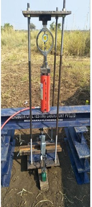

BGEDS expertise in providing pre-engineering support to finalize the scope of work and technical specification for geotechnical investigation for the preliminary and detailed stage. The team can coordinate with the Soil boring vendor to align the field and lab requirements. Based on the results our team of Geotechnical expertise scrutinize the results to develop the foundation design parameters and recommendation. The recommendation considered soil type and suitable foundation type such as Driven, Concrete, Pre-drill, Rock anchor, Screw pile, helical augur, etc.
The embedment and section size are the most important element that drives the cost of solar piles or foundation. Both profile and length are depending on the structural loading and soil strength. While structural loading is unchanged for a case but a closed and confident analysis of pull test results shall drive huge cost savings for any solar project. As we know a typical design is the representation of 1000 piles so a conscious and practical approach to defend the IE as well.

Foundation for PV structure are relatively short and lightly loaded both axial and lateral. Hence the transient loadings from site condition such as Wind loading from superstructure or uplift from frost actions are governing loads. Hence the foundation design requires a subject matter expert concerning the region and intended life condition. BGEDS developed and established a geotechnical design process for varying site and soil condition from the conventional foundation and customized solution. We also work with Pile product such as SPi piles, Ojjo and achors in US and Australia. Software such as L pile and All pile are the most common to perform lateral analysis.